The Configuration Editor provides a simple graphical user interface
with tabbed dialogs to helps you to manage GCALDaemon's configuration file.
It simplyfies editing this file (gcal-daemon.cfg) significantly.
By using a tool you also avoid typing errors and it is very easy
for example to encode a password or switch a service on or off.
1) Install GCALDaemon (Java 1.5 required).
2) Start Config Editor ('config-editor.bat' or 'config-editor.sh').
Select the second tab ('HTTP Synchronizer'), then click on the 'Google Account' button.
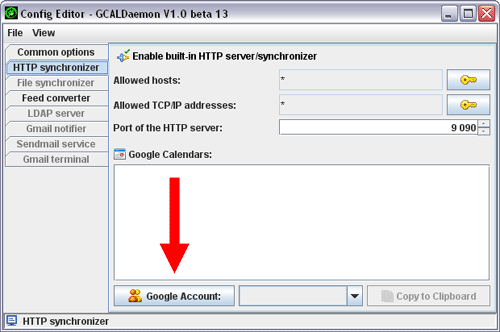
3) If required, you can register a new Google Account:
Click on 'New Account', type in your Gmail address and
password (twice), then click on 'Verify' button.

4) After the verification, click on the 'OK' button.

5) Select your Gmail address from the 'Google Account' combo.
Then Config Editor downloads this account's iCalendar addresses.
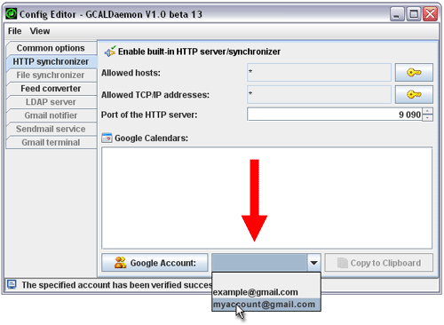
6) Select the appropriate iCalendar address (URL),
then click on the 'Copy to Clipboard' button.
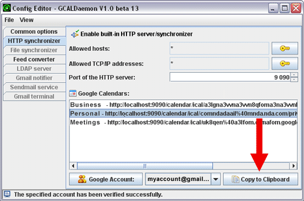
7) Launch Sunbird. Click the 'New Calendar...' menu on the Calendars page.
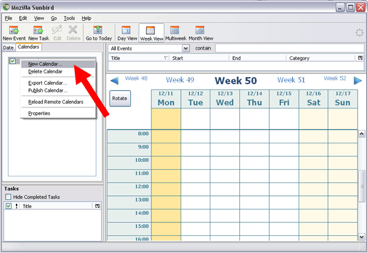
8) Select 'On the Network' option on 'Create New Calendar' dialog.
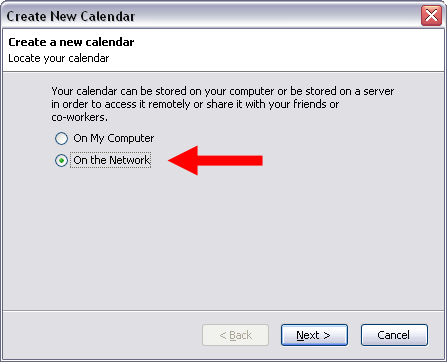
9) Select 'iCalendar' format, and paste [CTRL+V]
the copied iCal URL for your calendar's Private Address into 'Location' field.
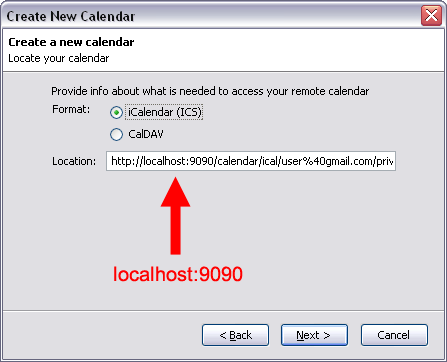
10) Input the new calendar's name (e.g. 'Google Calendar'). Click 'Next' then 'Finish'.
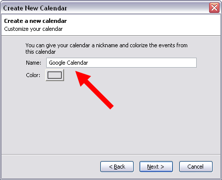
11) Input the username and password for your Google Calendar when prompted.
Optionally check the 'Use Password Manager to remember this password' box.
Items added (or modified/deleted) to your Sunbird calendar
will now automatically appear in your Google Calendar.
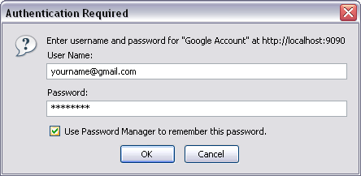
1) Install GCALDaemon (Java 1.5 required).
2) Start Config Editor ('config-editor.bat' or 'config-editor.sh').
Select the second tab and disable the HTTP-based synchronizer.
Select the third tab and enable the file-based synchronizer.
Enable the 'dial-up connection' mode (second checkbox on this page),
then click on the 'Google Accounts' button.

3) If required, you can register a new Google Account:
Click on 'New Account', type in your Gmail address and
password (twice), then click on 'Verify' button.
4) After the verification, click on the 'OK' button.
5) Click on the 'New' button.

6) Select/browse the appropriate Google Calendar and iCalendar file.
Click on 'Copy to Clipboard' then click 'OK'.
Save the changes (File/Save).
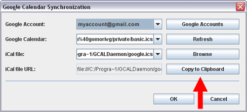
7) Launch Sunbird. Click the 'New Calendar...' menu on the Calendars page.
8) Select 'On the Network' option on 'Create New Calendar' dialog.
9) Select 'iCalendar' format, and paste [CTRL+V]
the copied iCal file URL for your calendar's Private Address into 'Location' field.
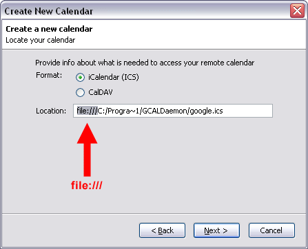
10) Input the new calendar's name (e.g. 'Google Calendar'). Click 'Next' then 'Finish'.
11) Items added (or modified/deleted) to your Sunbird calendar will now automatically appear in your Google Calendar.
GCALDaemon compares your Google Calendar (if available) and local iCalendar file every 10 minutes,
and does all modifications together. If it is unable to do so because the network is unavailable,
it tries again when it detects network presence.
1) Default synchronization:
Sunbird/Lightning alarm property synchronized unidirectionally (move property from Sunbird to Google).
Google Calendar supports discrete alarm values only (5-10-15-20-25-30-45 mins, 1-2-3 hours,
1-2 days, or one week). GCALDaemon converts different values into such an values
(e.g. 17 min to 15 min, 6 day to one week, etc).
Category, priority and URL properties are unsupported by the Google Calendar API.
| iCalendar event property |
Google Calendar event property |
Synchronization |
| summary |
title |
bidirectionally |
| location |
where |
bidirectionally |
| description |
content |
bidirectionally |
| created date |
published date |
bidirectionally |
| start date |
start date |
bidirectionally |
| end date |
end date |
bidirectionally |
| all day event (true / false) |
all day event (true / false) |
bidirectionally |
| status (tentative / confirmed / canceled) |
status (tentative / confirmed / canceled) |
bidirectionally |
| classification (public / private) |
visibility (public / private) |
bidirectionally |
| transparency (transparent / opaque) |
transparency (transparent / opaque) |
bidirectionally |
| attendees |
participants |
bidirectionally |
| recurrence rule (including exceptions) |
recurrence rule (including exceptions) |
bidirectionally |
| recurrence-id |
original event |
bidirectionally |
| alarm |
reminder |
one-way only (Sunbird to Google) |
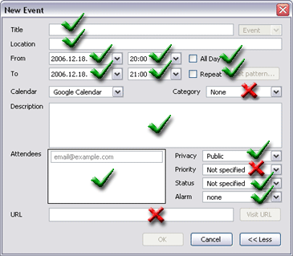
2) Extended synchronization:
GCALDaemon is able to synchronize on these four iCalendar property in 'extended mode':
alarm (two-way), category, priority and URL.
This is useful if you'd like to sync Google Calendar with your PDA (file-based sync and dial-up mode).
To enable this feature set the 'extended.sync.enabled' property to 'true'.
Note: Needless use of the extended mode (especially with large calendars) can reduce the performance.
| iCalendar event property |
Google Calendar event property |
Synchronization |
| alarm |
reminder |
bidirectionally |
| category (Business, Birthday, etc) |
hidden |
bidirectionally |
| priority (low, medium, high) |
hidden |
bidirectionally |
| URL |
hidden |
bidirectionally |
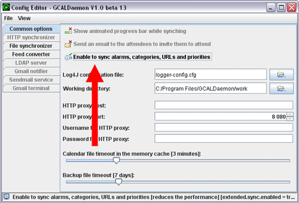
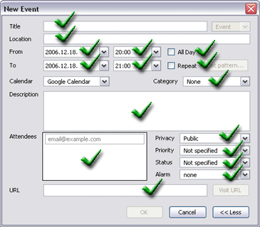
3) Google Calendar - unlike Sunbird/Lightning - does not support To Do (Task) items.
Therefore GCALDaemon stores To Do items in a local file storage.
This storage is the 'GCALDaemon/work' folder.
Before uninstall an older GCALDaemon version you should archive this directory.
If the new GCALDaemon installation finishes you can restore
the previous 'work' folder, including the old To Do items.